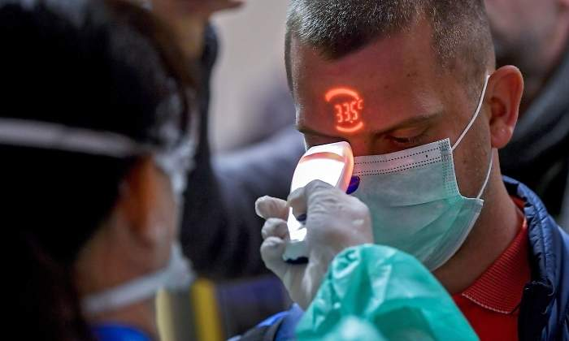

La OMS desmiente los mitos sobre el coronavirus: de los paquetes desde China a la protección de la cocaína
Cuanto alarmismo por un virus que tiene los mismos síntomas y similar mortaldad a la gripe común (por la cual nadie se preocupa)....
Posted On: 2020-02-25T00:00:00
Posted By: un ciudadano
A mí lo único que me preocupa de este virus es que Sanchez haya pedido tranquilidad
Posted On: 2020-02-25T00:00:00
Posted By: Tesis pagiada
EL DE LA FOTO TIENE 33,5 QUE VAYA RAPIDO A URGENCIAS, CON BOCATA, PORQUE CON 33,5 ESTA UN POCO HELADO O A LA MAQUINA LE FALTAN PILAS.
Posted On: 2020-02-25T00:00:00
Posted By: ME KEDE
Si....el del afoto debe tener el colomma virus groelandes que da frio por eso le marca 33,5, eso es muy preocupante, eso o que el medidor lo han comprado en un todo a 100.
Posted On: 2020-02-25T00:00:00
Posted By: 33,5
¿Pasa por un cigarro encendido o se achicharra?
Posted On: 2020-02-25T00:00:00
Posted By: Vft
Son unos HDLGP e ignorantes por no decir la verdad a la gente.Los primeros cabrones son los chinos por no dar los datos reales de muertes e infectados.Ahora recién vamos a saber el porcentaje real de mortandad por el virus porque ya pasó a Europa.. En Italia por el momento 10 muertos y 322 infectados..Y por ahí hay cada estúpido que por conservar el puesto de trabajo va diciendo que la gripe mata más gente....
Posted On: 2020-02-26T00:00:00
Posted By: Carlos
Suspenso la UE y los gobiernos, por no prevenir antes los acontecimientos, en china llevan un mes encerrados en sus casas sin poder salir
Posted On: 2020-02-26T00:00:00
Posted By: Pepe Goteras


Content Date: 2020-02-25
Download Date: 2021-03-17
Document ID: L0C049AN2